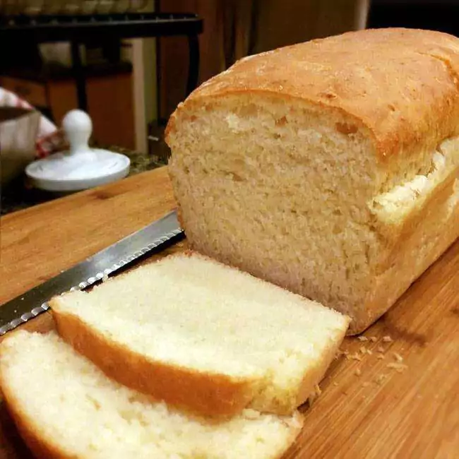

Pão Caseiro

Descrição
Como fazer um delicioso Pão Caseiro.
Ingredientes
- 1.2 kg de farinha de trigo
- 10 colheres (sopa) de açucar
- 1 colher (sopa) de sal
- sal a gosto
- 3 colheres (sopa) de margarina
- 3 unidades de ovos
- 600 ml de leite
- 20 g de fermento biológico seco
Passo a passo
- Numa tigela grande, coloque o leite morno, o açúcar e a manteiga;
- Misture bem e adicione os ovos, o fermento e misture mais um pouco;
- Acrescente 1kg de farinha de trigo e o sal;
- Misture muito bem e sove a massa por 10 minutos em uma bancada enfarinhada;
- OBS: essa massa fica mais mole do que a massa tradicional.
- Enquanto sova a massa, vá adicionando farinha de trigo para não grudar;
- Volte a massa para a tigela e cubra com um pano;
- Deixe-a descansar por 30 minutos;
- Em seguida, divida a massa em 3 partes e enrole como desejar;
- Acomode numa forma untada e enfarinhada, cubra novamente com um pano e deixe descansar por 50 minutos ou até dobrar de volume;
- Leve para assar em forno preaquecido, 180ºC, por aproximadamente 30 minutos ou até dourar.